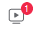

A. Inicio y navegación
Esta barra nos redirecciona a nuestro perfil. Las opciones son:
Inicio
Salir de la página y va al perfil
Amigos
Ver los amigos que tenemos en nuestro perfil. Desde aquí podemos aceptar nuevas solicitudes amistad o ver personas que el sistema nos sugiere y que podamos conocer. Esa sugerencia se realiza en base a que son amigos de amigos que tenemos aceptados en nuestro Facebook. Un número indica que tenemos solicitudes de amistad.
 Notificaciones
Ve notificaciones. Son publicaciones que han hecho otros amigos en su Facebook, tales como videos, etc. Un número indica que tenemos cosas pendientes por ver.
Marketplace
Facebook posee una página exclusiva dedicada a vender productos, algo similar a Milanuncios, Vinted, ... Se llama Marketplace. Mediante este botón accedemos a dicho mercado de Facebook. También la podemos encontrar en https://www.facebook.com/marketplace?ref=app_tab o pulsando el botón anteriormente descrito. En esa página podemos ver artículos que venden y clasificarlos por tipo o localización.
Grupos
Desde Facebook se pueden hacer grupos. También podemos entrar en la página general de Facebook de grupos mediante https://www.facebook.com/groups/feed/. Un grupo son un conjunto de usuarios que se une para compartir una afición común. Pueden ser cerrados, abiertos de acceso libre o abiertos con invitación. Desde aquí podemos buscar grupos, crear un nuevo grupo e invitar a usuarios, solicitar unirnos a alguno, etc. Por defecto Facebook nos sugiere grupos de acuerdo con los intereses que tengamos en nuestro perfil, perfil de amigos, etc.